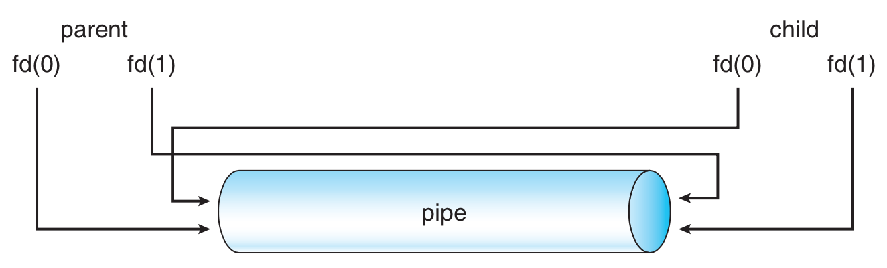
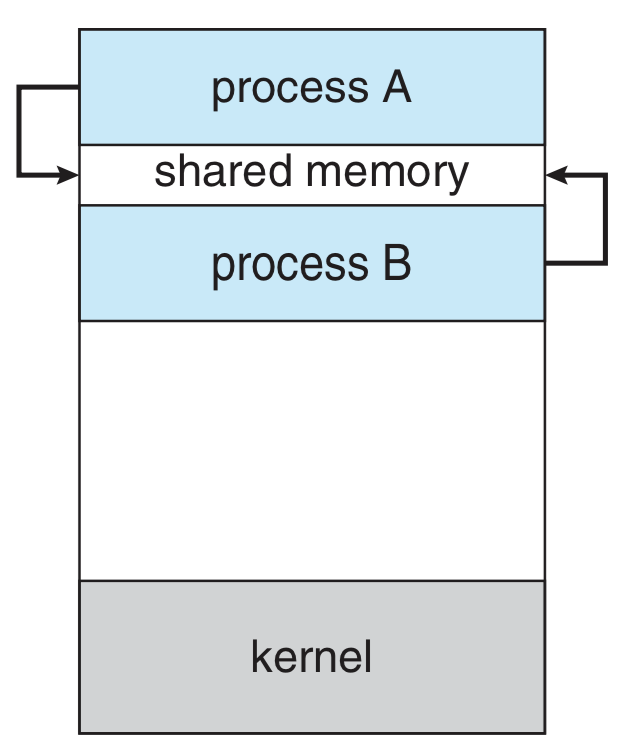
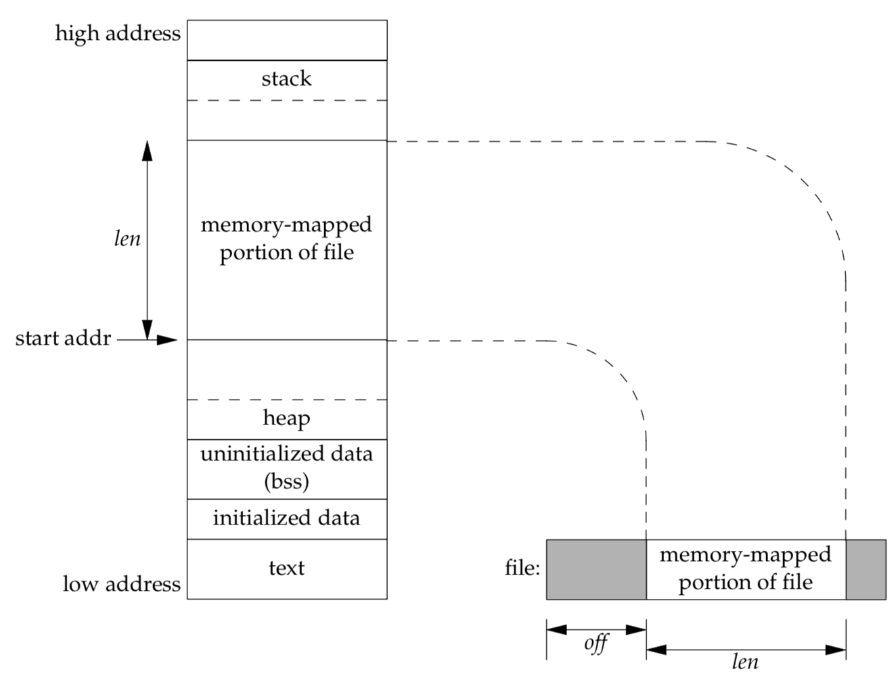

*IPC: Same System
In addition to the message-passing mechanisms thus far seen (signals, network), we can also use pipes and shared memory. Pipes share some significant similarity with both message-passing and shared memory, so it makes for a nice way to transition from one to the other.
In UNIX, we can create a pipe to set up communication between a producer and consumer. The producer writes in one end of the pipe and the consumer receives it on the other. This is unidirectional, so if bidirectional communication is desired, two pipes must be used (going in different directions). The UNIX method for creating a pipe is pipe and it is constructed with the call pipe( int fileDescriptors[]) where fileDescriptors[0] is the read-end and fileDescriptors[1] is the write-end . Yes, fileDescriptors means that UNIX thinks of a pipe as a file (UNIX thinks everything is a file...) even though it is in memory.

A UNIX Pipe .
The pipe itself is a block of main memory that is interpreted as a circular queue, and each entry in the queue is fixed in size and usually one character. The sender may place the message into the queue in small chunks, but the receiver gets data one character at a time. Thus, the sender and receiver need to know when the message is finished. This may be through the use of a designated termination character (e.g., the line feed or null character), or the message may begin with an explicit value of the number of characters the message will be .
A UNIX pipe may be stored on disk. When this happens, we call it a named pipe. Unless we make it a named pipe, a pipe exists only as long as the processes are communicating. Furthermore, regular pipes depend on file descriptors, so a parent-child relationship is required to get the descriptors from one process to another. The named pipe, however, might be used by any process and will persist even after the creating process has terminated. Another nice bonus of named pipes is that they can be bidirectional, so we do not need two pipes for communication to go in both directions. With that said, communication can only go in one direction at a time; if concurrent communication is required, a second pipe is needed after all.
You may have worked with pipes on the UNIX command line. A command like cat fork.c | less creates a pipe that takes the output of the cat program and delivers it as input to the program less which allows for scrolling and pagination of that data.
Let’s consider an example from that combines the pipe concept with what we’ve seen before: using fork to spawn a new child process and then setting up a communication pipe between the parent and child. We will send a message “Greetings” from the parent to the child.
#include <sys/types.h>
#include <stdio.h>
#include <string.h>
#include <unistd.h>
#define BUFFER_SIZE 25
#define READ_END 0
#define WRITE_END 1
int main( int argc, char** argv ) {
char write_msg[BUFFER_SIZE] = "Greetings";
char read_msg[BUFFER_SIZE];
int fd[2];
pid_t pid;
if (pipe(fd) == -1) {
fprintf(stderr,"Pipe failed");
return 1;
}
pid = fork();
if (pid < 0) { /* error occurred */
fprintf(stderr, "Fork Failed");
return 1;
}
if (pid > 0) { /* parent process */
/* close the unused end of the pipe */
close(fd[READ_END]);
/* write to the pipe */
write(fd[WRITE_END], write_msg, strlen(write_msg)+1);
/* close the write end of the pipe */
close(fd[WRITE_END]);
} else { /* child process */
/* close the unused end of the pipe */
close(fd[WRITE_END]);
/* read from the pipe */
read(fd[READ_END], read_msg, BUFFER_SIZE);
printf("read %s",read_msg);
/* close the write end of the pipe */
close(fd[READ_END]);
}
return 0;
}In some of the runs of this program we sometimes get a random character after the “Greetings” message. What gives? Remember that in C a string is NULL terminated. So a printf routine with a %s qualifier will just keep going until it gets to a 0-byte somewhere. We are supposed to put the null terminator where it belongs, but this may not suffice. When we have a buffer (as we do here), it makes sense to initialize the buffer to 0. So, in this code, we should add a call to memset to initialize the read_msg variable to 0s.
If we wanted to create a named pipe, the system call for that is mkfifo (make first-in-first-out) because sometimes a named pipe is called a FIFO. As it is a file, it can be manipulated with the usual UNIX file system calls: open, read, write, and close .
Conceptually, the idea of shared memory is very simple. A particular region of memory is designated as being shared between multiple processes, all of whom may read and write to that location. To share an area of memory, the OS must be notified.
Normally, a region of memory is associated with exactly one process (its owner) and that process may read and write that location, but other processes may not. If a second process attempts to do so, the operating system will intervene and that will be an error. If a process wants to designate memory as shared, it needs to tell the operating system it is okay for the other process to have access to that area. Furthermore, the OS needs to know that the memory is referenced by two processes: if the first one terminates and is reaped, the memory may still be in use by the second process, so that previously-shared region should not be considered free as long as the second process is still using it. Once the area of memory is shared, when either process attempts to access it, it is just a normal memory access. The kernel is only involved in the setup and cleanup of that shared area.
This situation is shown in the diagram below.

A view of memory when a block is designated as shared .
Note that in the diagram the shared memory area appears in between the memory for processes A and B; this is not necessarily the case (the shared block could be anywhere). It tends to be in the block for the process that creates the shared memory in the first place. This makes sense, because Process A will request the memory from the operating system and then ask the OS to consider a particular block A already owns to be shared.
When a section of memory is shared, there exists the possibility that one process will overwrite another’s changes. To prevent this sort of problem, we will need a mechanism for co-ordination... a subject we will return to later.
Suppose we want to share a section of memory. We need to obtain a key that identifies a specific memory segment. Keys are just integer values, so we would like them to be unique (or at least close to it).
One method is to generate the key with the “file to key” function found in sys/ipc.h :
The key is generated from the given file name (pathname) and the value proj. The file does have to exist, because the function uses a given inode. And the integer argument allows generating multiple IPC objects based off the same file. There is a very small risk of duplicate numbers if we are unlucky, but the risk is small enough that we consider it acceptable.
Another way we can get a key is using the constant IPC_PRIVATE. If we give the constant in where a key_t is expected then a guaranteed unique key is returned.
The functions we need are in sys/shm.h. The workflow for using shared memory is as follows (with details obviously after) :
Create a new shared memory segment – shmget.
Attach the shared memory segment (add the shared segment to the process calling attach) – shmat.
Then the process can use the shared memory.
Detach, from the shared memory segment (like deallocation, if forgotten then it will happen automatically when a process ends) – shmdt.
Delete the shared memory segment (after all currently attached processes have detached), done by one process only – shmctl.
The functions are:
int shmget( key_t key, size_t size, int shmflg );
void* shmat( int shmid, const void* shmaddr, int shmflg );
int shmdt( const void* shmaddr );
int shmctl( int shmid, int cmd, struct shmid_ds *buf )To create a shared memory segment, or get a reference to an existing one, we use shmget. The first argument is the key, which can be either the result of a ftok() call or the constant IPC_PRIVATE. The second argument is obviously the number of bytes the shared memory should be. The third argument is the access permissions that follow the UNIX permission standards, e.g. 0600.
The flags can also add IPC_CREAT (if no segment with the given key exists, create it) and IPC_EXCL (if “create” was used, fail if a segment with the given key exists). These are be combined with the permissions, and each other, with bitwise OR operator, like opening a file.
The return value of the function is the integer identifier of the shared memory segment. Given this identifier, it’s possible to then attach that segment: add the shared memory to the running process.
When calling shmat, the first argument is the ID of the shared memory returned by shmget. The second parameter is where to put the memory, but in this case you should always use NULL and let the kernel decide where to put it. If you don’t, your program may not work as expected on different machines (or even at different times!) because that memory might be in use. As for flags, we could use SHM_RDONLY which would prevent writing (actually an attempt would result in a segmentation fault) .
The return value of the call to shmat is a standard C pointer, containing the address of the shared memory. That’s how we know where it is. Now we can read or write (if allowed) the data. At this point we are able to use the shared memory just like any other memory. Nothing special is needed – no read or write calls – just read and assign variables like any other memory.
Of course, a process that wants to attach to the memory has to know the key (or ID) to find it. If we created the segment ourselves, we obviously know where it is. But presumably you want some other process to have it as well. If two processes use the same input values for ftok() they will get the same result, so that’s one method. Or, if a parent attaches a shared memory segment and then calls fork(), the child inherits the shared memory segments, so it’s is already set up.
When we are done with a segment we can detach from it with shmdt, and it takes as an argument the value returned by shmat. It could have been the ID value, in my opinion, but this works as well. If we forget to do this, then it will happen automatically at process termination, but it is good programming practice to deallocate memory when you no longer need it, and similarly to detach from a shared memory segment when we are done.
To delete a shared memory segment, we use shmctl. This function can do a lot more than delete it, such as modify properties of the data structure that is used to control shared memory. But we just need to, at a minimum, delete the segment. To do so, call the function with the shared memory ID, and the command is IPC_RMID (“remove ID”). We must leave the last argument as NULL for this deletion.
Using the shmctl function with the deletion command doesn’t (immediately) the segment. As long as it’s still attached somewhere, the memory can’t be cleaned up. In this respect, it’s like a file in UNIX – if it’s open then it can’t be removed until the last process closes it. In Linux it’s possible to attach to a still-existing segment if it’s been marked for deletion, but this is not consistent behaviour across all UNIX systems and should not be done .
Consider a minimal (working) example where shared memory is employed to deliver a message from a child process to a parent.
#define _XOPEN_SOURCE
#include <stdio.h>
#include <stdlib.h>
#include <sys/shm.h>
#include <string.h>
#include <unistd.h>
#include <sys/wait.h>
int main( int argc, char** argv ) {
int shmid = shmget( IPC_PRIVATE, 32, IPC_CREAT | 0666 );
int pid = fork();
if ( pid > 0 ) { /* Parent */
waitpid( pid, NULL, 0 );
void* mem = shmat( shmid, NULL, 0 );
printf("The message the parent received from the child is %s.\n", (char*) mem );
shmdt( mem );
shmctl( shmid, IPC_RMID, NULL );
} else if ( pid == 0 ) { /* Child */
void* mem = shmat( shmid, NULL, 0 );
memset( mem, 0, 32 );
sprintf( mem, "Hello World" );
shmdt( mem );
}
return 0;
}mmap.An alternative approach for shared memory involves the use of mmap(), a function nominally used to map a file into memory. This is neat – it would allow us to map some disk file to a buffer, so when we fetch data from that buffer, the data is read and when we write into the buffer the data is written to the file. It allows us to read and write files as if they were memory accesses. Very convenient. But we can also use this for IPC, hence its introduction here. But first, the functions need to be introduced. As in :
void* mmap( void* address, size_t length, int protection, int flag, int fd, off_t offset );
int mprotect( void* address, size_t length, int prot );
int msync( void* address, size_t length, int flags );
int munmap( void* address, size_t length );The first argument is the address for where you want the mapped region to go in memory; unless you have a very good reason to do otherwise, let the system choose by supplying NULL. The next argument is the number of bytes we want to map. The third argument is the protection rules — read, write execute, and none – that apply (details below). The flag argument indicates the mode that the memory will be mapped in. The second-last argument is the file descriptor of the file we wish to map, and the last argument is the offset from the start of the file where the segment begins.
The return value is a pointer to the starting address of the memory area where the file is mapped.
Okay, so about the protection flags: valid values are PROT_NONE, PROT_READ, PROT_WRITE, and PROT_EXECUTE, which can be combined using the bitwise OR operator (as always). The read, write, and execute ones look as expected, but whatever flags you choose have to be consistent with how the file was opened with open. So you can’t use open as readonly and then somehow use mmap with the write flag. And PROT_NONE forbids all access; any attempt to access that memory results in a segmentation fault.
Digression: why would you ever use PROT_NONE? What’s the point of mapping a segment of the file and then forbidding all access...? A possible use of this is to put “guards” at the start and end of a region of memory. If the process accidentally goes outside the bounds, then a segmentation fault is generated, thus enforcing the ends of the area .
And lastly, you have two flag options. The first is MAP_PRIVATE – modifications are not visible to other processes mapping the same file and are not written out to the underlying file. The other is MAP_SHARED – modifications are visible to other processes and are written to the underlying file (although perhaps not instantly – there is a function to make sure we all agree).
As you can imagine, the private option is for when we just want to work with a file ourselves and the shared option is for use in an IPC scenario.

Conceptual diagram of a memory mapped file .
If we wish to change the protection rules for a section, we use mprotect, which takes as arguments the address, the size, and the new access rules.
When a piece of the file is loaded in memory in the shared mode, file changes are not necessarily written out to the underlying file immediately. This is (partly) a performance enhancement but can mean that not everybody agrees on the content of the file because a change has not yet been written to disk. For this, the msync function is used: the address and length parameters are self explanatory. For flags we’ll just say use MS_SYNC which makes this a blocking call. There are other more advanced options but we will not discuss that here. Also, this function does nothing if the file is mapped in private.
Finally, when we’re done with a segment, we can unmap it with munmap, which takes the same arguments of the address and length. A segment would be unmapped automatically when a process exits, but as always it is polite to unmap it as soon as you know that you are done with it.
Let’s do a quick example. Suppose I have a file example.txt that contains the text “This is sample text.” We are going to overwrite it with “It is now overwritten” in a child process and the parent will see the updated message.
#define _XOPEN_SOURCE
#include <stdio.h>
#include <stdlib.h>
#include <sys/shm.h>
#include <string.h>
#include <unistd.h>
#include <sys/wait.h>
#include <sys/stat.h>
#include <fcntl.h>
#include <sys/mman.h>
int main( int argc, char** argv ) {
int fd = open( "example.txt", O_RDWR );
struct stat st;
stat( "example.txt", &st );
ssize_t size = st.st_size;
void* mapped = mmap( NULL, size, PROT_READ | PROT_WRITE, MAP_SHARED, fd, 0 );
int pid = fork();
if ( pid > 0 ) { /* Parent */
waitpid( pid, NULL, 0 );
printf("The new content of the file is: %s.\n", (char*) mapped);
munmap( mapped, size );
} else if ( pid == 0 ) { /* Child */
memset( mapped, 0, size ); /* Erase what's there */
sprintf( mapped, "It is now Overwritten");
/* Ensure data is synchronized */
msync( mapped, size, MS_SYNC );
munmap( mapped, size );
}
return 0;
}The example works acceptably in the sense that we successfully overwrite the data with the new data and the parent process sees the change. But things get weird if we tried to write fewer bytes than the original message was. In general, the mapped area size cannot change. So if we want to write more data than is in the file, we can’t make the content of the file larger (and things look strange when we write fewer). In Linux there is the mremap call but this is not portable (ie does not work on all systems). But this would be great for something like sorting an array, wouldn’t it? The sorted array is the same size as the input and we could share the work...